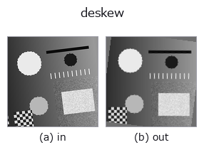

geometry op• Data kinds: image → image
• Call: fullseye.apply(img, "deskew", a=0.5, b=0.5) (2-D model = एक image + दो scalar knobs a,b∈[0,1])

*Figure synthetic 128×128 input पर सच में चलाकर मिला output है। बाईं ओर input, दाईं ओर output। Point clouds ऊपर से देखे गए scatter के रूप में (brightness = z), 1-D series line के रूप में, volumes z दिशा में maximum-intensity projection के रूप में, videos बीच के frame के रूप में, complex images amplitude के रूप में, और जो return values चित्र नहीं बन सकते वे स्वयं values के रूप में दिखाए जाते हैं।*
Knob a को बदलकर (0.1 / 0.5 / 0.9, दूसरा knob default पर):
▸ deskew: knob a को बदलने का figure (docs site)
Knob b को बदलकर (0.1 / 0.5 / 0.9, दूसरा knob default पर):
▸ deskew: knob b को बदलने का figure (docs site)
Stages (पहले आने वाले ops → यह op, बाएँ से क्रम में):
▸ deskew: stages का figure (docs site)
दूसरी images पर भी (synthetic scene / photo / coins। ऊपर की row में inputs, नीचे की row में उनके outputs। Knobs default पर):
▸ deskew: दूसरी images पर output (docs site)
*Colour (H,W,3) input नहीं दिखाया गया: यह op colour channel को तीसरे spatial axis की तरह लेता है (channels को पार करता है)। इसे हर channel के लिए अलग से call करें।*
झुकाव मापकर उसे सीधा करता है (deskew)। कोण knob से नहीं दिया जाता, बल्कि image से अनुमान लगाया जाता है।
> नीचे का विस्तृत विवरण मूल text में है — सारांश और headings का अनुवाद हो चुका है।
a が探索の範囲 ±(2 + 43a)° を振る(a=0 で ±2°、a=1 で ±45°)。b が精緻化の刻み 1/(1 + round(9b))° を振る(b=0 で 1° 刻み、b=1 で 0.1° 刻み。細かいほど遅い ―― ここが取引になっている)。
判定量は横方向の射影プロファイルの差分二乗和。ある角度で回したときに行が揃うと、行方向に潰した濃度の折れ線が最も激しく上下する。1° 刻みで粗く探し、最良の ±1° を b の刻みで詰める。同点なら角度の小さい方を採るので、構造の無い画像・空フレームでは 0°(= 入力をそのまま返す)に落ちる。
• 探索は長辺 256 画素に間引いた写しで行う(角度は間引きで変わらない)。原寸で回すのは最後の 1 回だけ。512x512 で最も広い探索でも実測 121 ms。
• 点数は回転後の中央の正方形(一辺 = min(H,W)/sqrt(2))だけで取る ―― どの角度でも枠内に収まる範囲なので、角の埋めかたが点数に混ざらない。
• 枠外は縁の中央値で埋める(mode="constant")。既存の rotate_image は鏡映で埋めるため、帳票を起こすと四隅に鏡文字が写り込む(向こうの docstring が自ら「枠外を背景色で埋めたい用途には向かない」と認めている)。起こしたものをそのまま OCR・切り出しへ渡せるのが、この op の足し前。
実測の精度と限界(行間 14 画素・幅 384 画素の合成頁): b=1(0.1° 刻み)で 1 / 2 / 3.7 / 5 / 12 / 20° のいずれも誤差 0.00°。ただし 0.6° 未満の傾きは 0 を返す ―― 頁の幅いっぱいでも行のずれが 1 画素に届かず、射影の鋭さが補間の丸まりに埋もれるため。細かく測りたければ入力を大きくする(判定量は幅に比例する)。
先行研究: 射影プロファイルで傾きを測るのは古典で、Postl (1986) が分散を、Baird (1987) が二乗和 + 粗密の角度探索を判定量にした。この op は Baird の系譜で、新しいのは手法ではなく縁の扱いである(下記)。
★以前は差分基準が +3.0 度 ずれていた。その原因が確定した。 2026-09-17 の事前測定で、真値 −7/−3/+3/+7 度 に対し分散基準は誤差 0.0 度、差分基準は 4 本すべて +3.0 度 ずれ、原因は ndimage.rotate が作る縁の人工物だろうが「mode="constant" で消えるかは未検証」と記録していた。塗り方ではなく見る範囲が原因だった —— 回転後の内接正方形だけで点を取ると、差分基準でも 1/2/3.7/5/12/20 度 のすべてで誤差 0.00 度 になる(実測)。
値域は入力のまま(線形補間と縁の中央値はどちらも値域を広げない)。★空フレーム(値域 1e-9 未満)と 8 画素未満の入力はそのまま返す。★タイル分割してはいけない ―― 角度は画像全体から 1 つ決まるもので、タイルごとに測ると各タイルが別々の角度で回る(scale.py に理由つきで登録済み)。
• gallery2d_geometry family guide
• Sample data catalog (DL URL / license) — 2-D के लिए skimage.data (BSD/public) + synthetic, 3-D के लिए real data sources (Stanford/PDS आदि) के DL URL।
• Operators का स्रोत और संदर्भ — इस op family के मूल research/methods के स्रोत।
• Algorithm का मानक स्रोत (लेखक, वर्ष) और उपयोग ऊपर की family usage guide में दिए गए हैं।
नीचे का program सच में चलता है, यह जाँचा गया है (figure वाला ही input)। Studio की help में यह block buttons बन जाता है, जिनसे इसे वहीं load करके चलाया जा सकता है।
rotate_img 0.58 0.50 deskew 0.50 0.50
▸ यह pipeline load करें · Load करके चलाएँ
• gallery2d_geometry — py -3.11 examples/gallery2d_geometry.py
image को input के रूप में लेते हैं)identity · gaussian · mean_box · bilateral · unsharp · median · min_filter · max_filter
geometry)rotate_img · rescale_img · affine_warp · sk_swirl · mirror_image · transpose_region · rotate_image · zoom_image_factor
*Provenance: ops.py — 2D operator registry. यह per-op note tools/opdocs.py md से अपने-आप generate होता है (हाथ से edit न करें)।*
© 2026 Kazufumi Furuse — Fullseye operator documentation. Licensed under Apache-2.0.